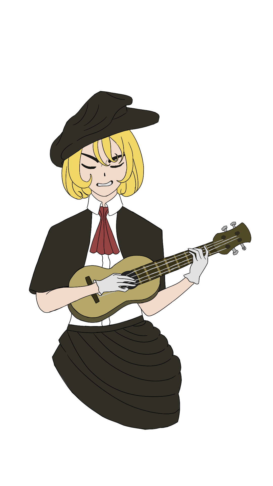

You are a wandering bard who travels across regions to sing tales about adventures that you made up (However your audience doesn't need to know that). Create captivating tales to con...vince your audience or else you will be homu lessu. Aware!This Page Contains Noises, Pwease adjust ur volume
